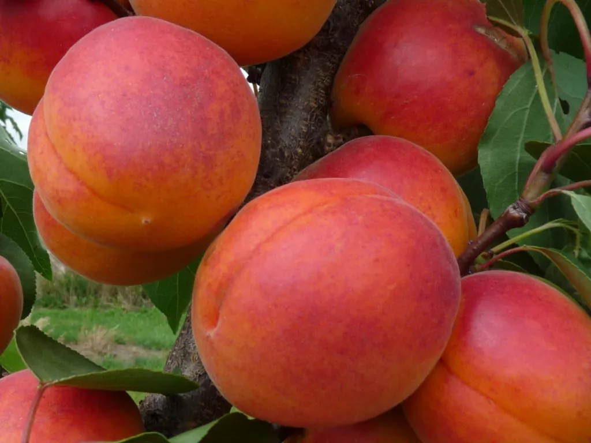
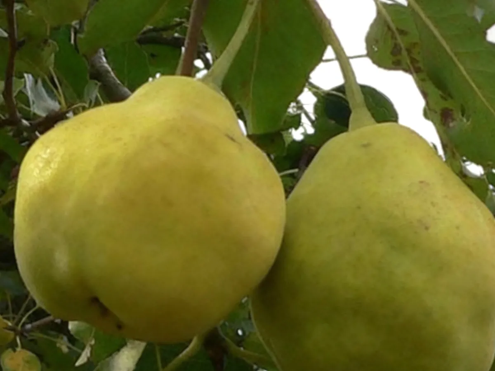
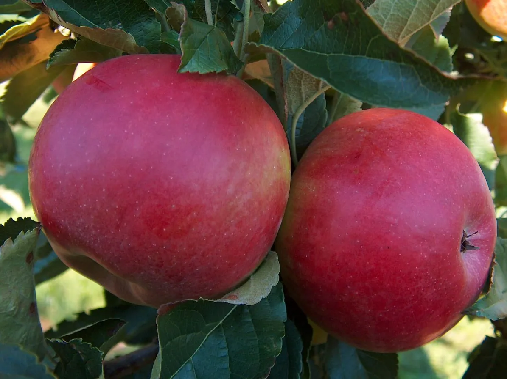

Rólunk
Bemutatkozik a Csodakert
Gyümölcsfa-oltványokat, csemegeszőlő-oltványokat és magastörzsű rózsafákat árulunk online, fajtánként. Itt elmondjuk, hogyan dolgozunk, és miben segítünk, amikor fát választasz.



Rubinola alma, Orangered kajszi, Nyári Kálmán körte · néhány fajta a kínálatból

Kik vagyunk
Úgy gondoljuk, a jó gyümölcsfához nem kell sokat keresgélni.
Ezért a kínálatunkat fajtánként mutatjuk be, a termés képével együtt, hogy könnyen megtaláld, ami a kertedbe való.
Egy almafa vagy egy barackfa sokféle lehet: van, amelyik korán érik, és van, amelyik késő ősszel; van, amelyik egyedül is terem, és van, amelyik mellé porzófajta kell. Ezért minden fajtánál leírjuk, amit tudni érdemes.
- gyümölcs
- 10
- fajta
- 178
- gyümölcsfa-oltvány
- 3000 Ft
Segítség
Miben segítünk?
Abban, hogy olyan fát válassz, amelyik a kertedben is jól érzi magát, és évekig örömet okoz.
-
Érési idő
Minden fajtánál megadjuk, mikor érik. Így úgy válogathatsz, hogy tavasztól őszig legyen mit szüretelni.
-
Porzás
Leírjuk, melyik fajta terem egyedül, és melyik mellé kell porzófajta, hogy biztos legyen a termés.
-
Őszinte tanács
Ha kérdezel, elmondjuk, mire jó egy-egy fajta termése, és mit érdemes mellé ültetni.
Rendelés
Rendelj tőlünk
Válaszd ki a kínálatból a fajtákat, tedd őket kosárba, és küldd el a rendelést az űrlapon. Ha bizonytalan vagy, hívj, és segítünk összeállítani.